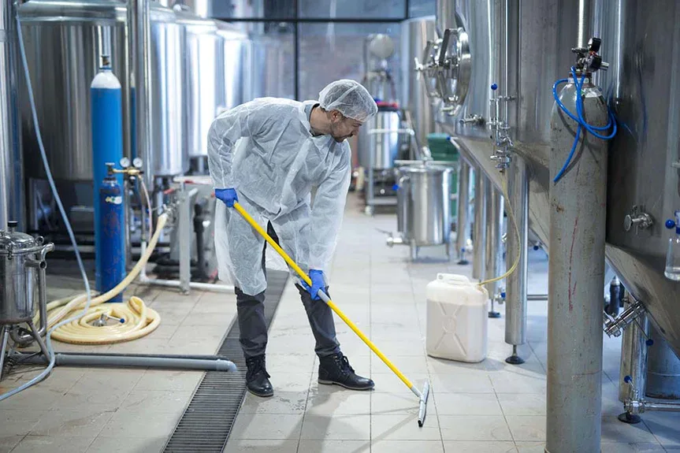
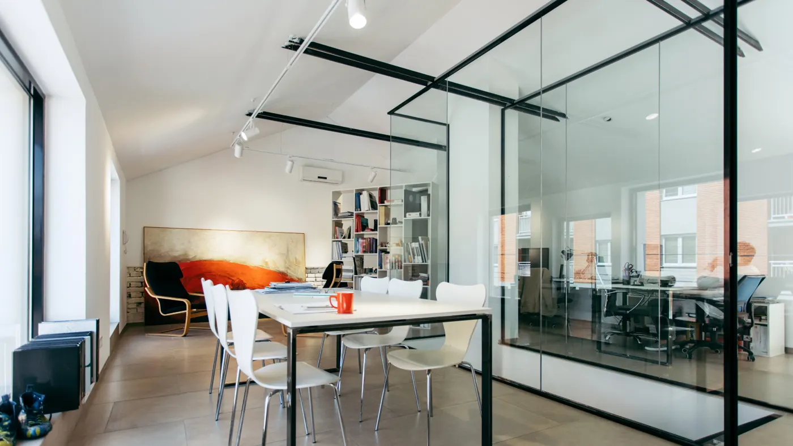
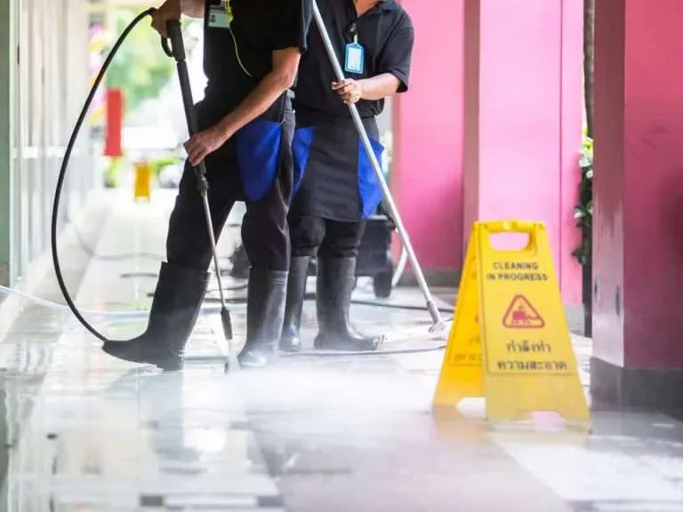
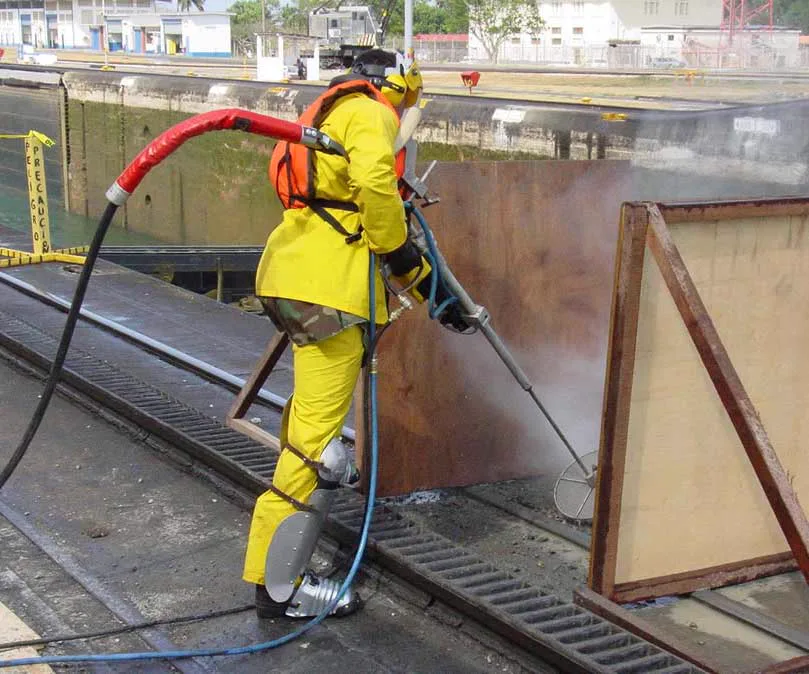
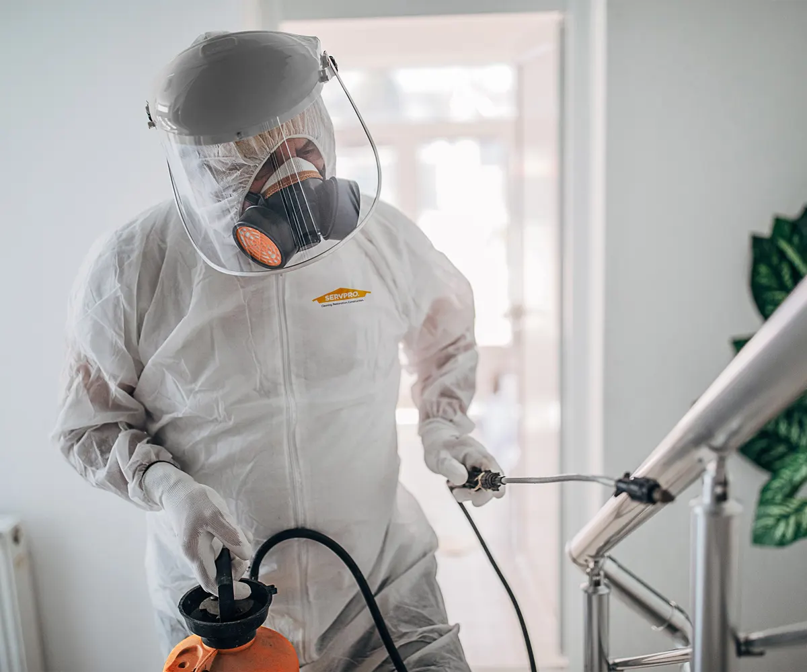
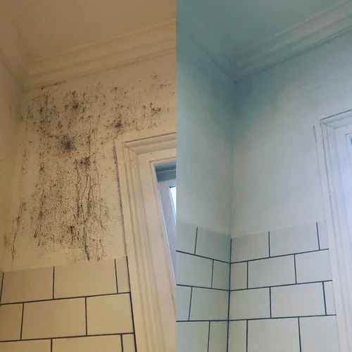
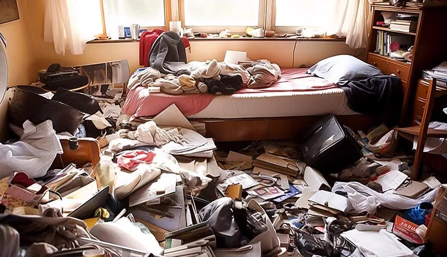
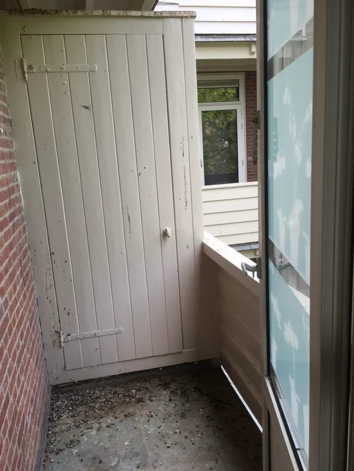

Vastgoedbeheerders
Voor periodiek onderhoud, mutaties, calamiteiten en opleveringen binnen één vastgoedportefeuille.
Specialistische reiniging & totaalonderhoud
Induclean ondersteunt vastgoedbeheerders, woningcorporaties, VvE’s en bedrijven met reiniging, steigerbouw, gevelonderhoud en compleet vastgoedonderhoud. Professioneel georganiseerd, helder afgestemd en landelijk inzetbaar.

Specialist én onderhoudspartner
Een pand vraagt om meer dan losse werkzaamheden. Daarom brengt Induclean specialistische reiniging en totaalonderhoud samen in één overzichtelijke dienstverlening.
Of het nu gaat om een terugkerend onderhoudsplan, een mutatiewoning, een vervuilde gevel of een gevoelige calamiteit: we beoordelen wat nodig is, stemmen de uitvoering af en leveren zorgvuldig op.
Onze disciplines
Vijf duidelijke categorieën, met werkzaamheden die afzonderlijk of als totaalpakket kunnen worden ingezet.
Basis & specialistisch
Van facilitaire en industriële schoonmaak tot desinfectie, schimmelsanering en specialistische incidentreiniging.
Veilig bereikbaar
Passende tijdelijke constructies voor bereikbaarheid bij reiniging, gevelwerk en onderhoudswerkzaamheden.
Buitenzijde
Periodieke reiniging en verzorging van gevels en buitenruimtes voor een nette, representatieve uitstraling.
Gemeenschappelijke ruimtes
Structurele schoonmaak en verzorging van appartementencomplexen, afgestemd op bewoners en beheer.
Eén onderhoudspartner
Praktische ondersteuning voor vastgoedbeheerders en woningcorporaties, van mutatie tot periodiek totaalonderhoud.


Periodiek onderhoud
Specialistische uitvoeringVoor wie wij werken
Induclean werkt met organisaties die continuïteit, korte lijnen en een verzorgde oplevering belangrijk vinden.
Bespreek uw locatiesVoor periodiek onderhoud, mutaties, calamiteiten en opleveringen binnen één vastgoedportefeuille.
Voor woningen, wooncomplexen en specialistische situaties die zorgvuldig en snel moeten worden afgehandeld.
Voor representatieve algemene ruimtes en terugkerend onderhoud rondom het gebouw.
Voor facilitaire schoonmaak, industriële reiniging en onderhoud van bedrijfslocaties.
Specialistische reiniging
Bij ernstige vervuiling, gezondheidsrisico’s of gevoelige omstandigheden werkt Induclean met een beheerste, discrete aanpak.

Reiniging en desinfectie bij biologische vervuiling, incidenten en andere risicovolle situaties.

Gerichte aanpak van zichtbare schimmel en vervuilde oppervlakken, met aandacht voor een nette oplevering.

Stapsgewijs opruimen, ontruimen en reinigen van ernstig vervuilde woningen en ruimtes.

Veilige reiniging van balkons, galerijen, gevels, daken en andere vervuilde buitenruimtes.
Onze werkwijze
Korte lijnen, concrete afspraken en één aanspreekpunt gedurende het hele traject.
We bespreken de locatie, werkzaamheden, planning en gewenste frequentie.
Waar nodig bekijken we de situatie en brengen we aandachtspunten in kaart.
U ontvangt een duidelijke aanpak met heldere afspraken over de uitvoering.
Ons team voert het werk zorgvuldig uit en levert de locatie netjes op.
Contact
Vertel kort om welke locatie en werkzaamheden het gaat. We nemen contact met u op om de mogelijkheden en planning te bespreken.